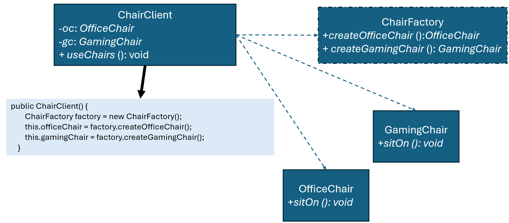

優點
缺點
總評
本次互動僅展現在題目範圍內的回答，雖條理明確但幾無任何深度互動或合作，缺乏人機協同或主體性行為。需增強反思、追問、驗證等高層次互動。
interface Chair {
void sitOn();
}
class GamingChair implements Chair {
public void sitOn() {
System.out.println("Sitting on Gaming Chair");
}
}
class OfficeChair implements Chair {
public void sitOn() {
System.out.println("Sitting on Office Chair");
}
}
interface ChairFactory {
Chair createChair();
}
class OfficeChairFactory implements ChairFactory {
@Override
public Chair createChair() {
return new OfficeChair();
}
}
class GamingChairFactory implements ChairFactory {
@Override
public Chair createChair() {
return new GamingChair();
}
}
class ChairClient {
private Chair chair;
public ChairClient(ChairFactory chairFactory) {
this.chair = chairFactory.createChair();
}
public void useChair() {
chair.sitOn();
}
}
public class Main {
public static void main(String[] args) {
ChairClient os = new ChairClient(new OfficeChairFactory());
os.useChair();
os = new ChairClient(new GamingChairFactory());
os.useChair();
}
}
!@#$報告
新設計有何優點?
這個設計把「椅子的建立」跟「椅子的使用」分開來處理。ChairClient 不再自己決定要用哪一種椅子，而是透過 ChairFactory 取得物件，所以它只負責使用 sitOn()，不需要知道實際是哪一種椅子。
這樣的改動讓程式在修改時比較單純。原本如果在 Client 裡直接寫死某一種椅子，之後要更換或新增種類，就一定要回頭改這段程式。但現在只要換一個 Factory，就能改變使用的椅子種類，原本的 Client 不用動。
在擴充上也比較方便。如果未來要新增新的椅子類型，例如其他功能的椅子，只需要新增對應的類別與工廠，就可以直接接進來使用，不需要修改既有程式，降低出錯的機會。
另外，物件建立的地方被集中在 Factory 中。如果之後建立椅子的過程變得比較複雜，例如需要初始化或設定參數，只需要在工廠中調整，不用在多個地方重複修改，維護起來會比較容易。
整體來說，這個新設計讓程式在更換、擴充以及維護時都比較簡單，也比較不容易因為修改影響到其他部分。!@#$
請檢視程式碼介面是否違反 Abstract Factory 模式，並撰寫報告，討論新設計有何優點?

public class ChairClient {
private Chair chair;
public ChairClient(ChairFactory factory) {
this.chair = factory.createChair();
}
public void useChair() {
chair.sitOn();
}
}
並修改程式，使得執行輸出：